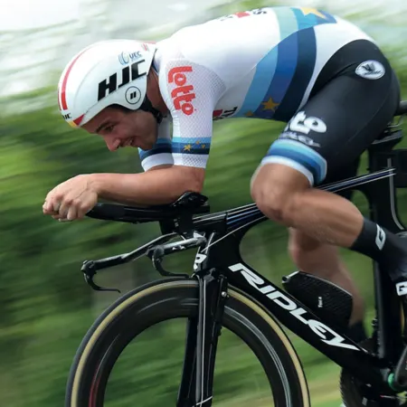

I love programming.I've been programming when I was in class ten and working on programming gives me much pleasure that any other hobby can.

My favourite hobby is also cycling.Cycling is one of the most versatile activities that can become a daily habit,apart from maintaining good health and helping the environment by reducing pollution. I've visited over 50 places and went there by cycle.
 page1